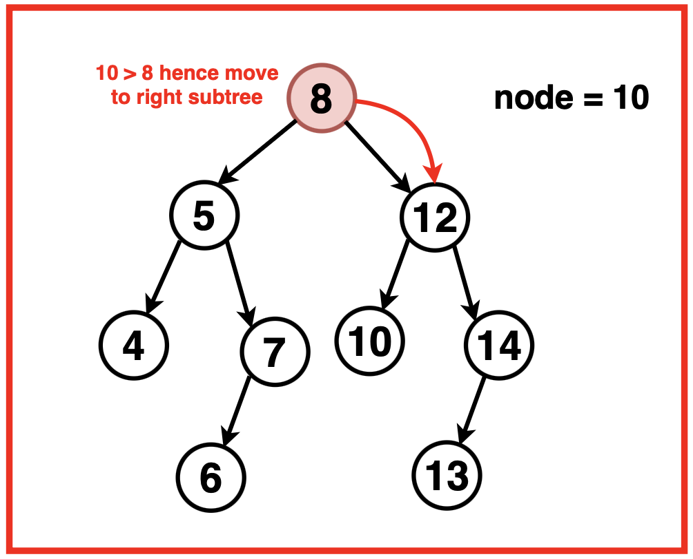
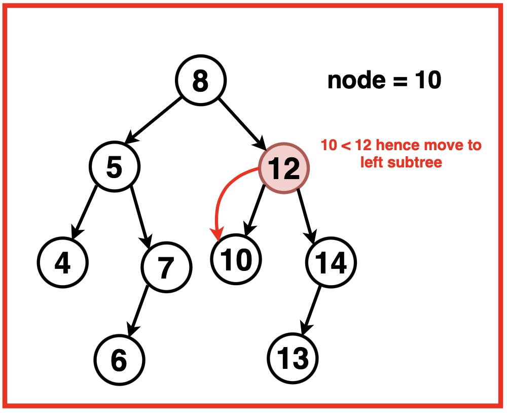
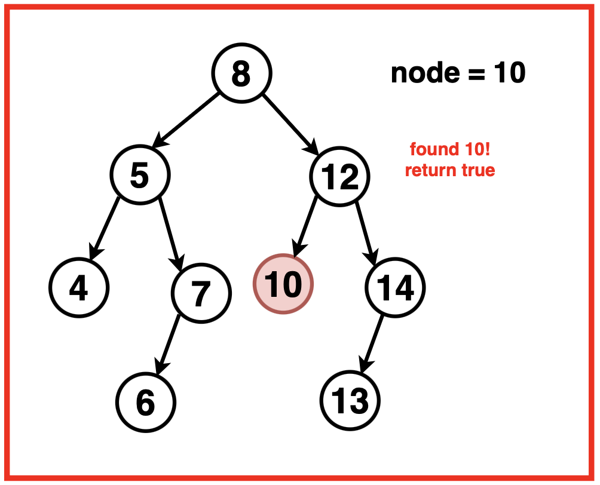

Disclaimer: Don’t jump directly to the solution, try it out yourself first.
Approach
Algorithm
Starting from the root, continuously compare the key value with the current node’s value, traverse to left or right based on these comparisons.
If the current node's value matches the target value, the algorithm stops and returns that node. Otherwise, it moves down the tree, choosing the left or right child depending on whether the target value is smaller or larger than the current node's value, respectively.
This process continues until either the target value is found within a node or the algorithm reaches a nullptr node, indicating that the value is not present in the BST.
Start at the root of the Binary Search Tree.
While the current node is not null and the current node’s value is not equal to the key:
If the target value is less than the current node’s value, move to the left child (since smaller values are on the left).
If the target value is greater than the current node’s value, move to the right child (since larger values are on the right).
Return the current node if it contains the target value, or NULL if the value is not found in the BST.



Code
#include <bits/stdc++.h>
using namespace std;
// Definition of TreeNode
struct TreeNode {
int val;
TreeNode* left;
TreeNode* right;
TreeNode(int data) {
val = data;
left = right = nullptr;
}
};
class Solution {
public:
// Function to search for a node with given key in BST
TreeNode* searchBST(TreeNode* root, int target) {
// Traverse until we reach a null node or the target is found
while (root != nullptr && root->val != target) {
// If target is less than current node, go left
if (target < root->val) {
root = root->left;
}
// If target is greater than current node, go right
else {
root = root->right;
}
}
// Return node if found, else nullptr
return root;
}
};
// Driver code
int main() {
TreeNode* root = new TreeNode(4);
root->left = new TreeNode(2);
root->right = new TreeNode(7);
root->left->left = new TreeNode(1);
root->left->right = new TreeNode(3);
Solution obj;
TreeNode* result = obj.searchBST(root, 2);
if (result)
cout << "Node found: " << result->val << endl;
else
cout << "Node not found" << endl;
return 0;
}
import.java.util.*;
// Definition for a binary tree node
class TreeNode {
int val;
TreeNode left, right;
TreeNode(int x) {
val = x;
left = right = null;
}
}
class Solution {
// Function to search a value in BST
public TreeNode searchBST(TreeNode root, int target) {
// Traverse the tree while node is not null and value not matched
while (root != null && root.val != target) {
// If target is less than node's value, go to left subtree
if (target < root.val) {
root = root.left;
}
// Else go to right subtree
else {
root = root.right;
}
}
// Return the node if found, otherwise null
return root;
}
}
// Driver code
public class Main {
public static void main(String[] args) {
TreeNode root = new TreeNode(4);
root.left = new TreeNode(2);
root.right = new TreeNode(7);
root.left.left = new TreeNode(1);
root.left.right = new TreeNode(3);
Solution obj = new Solution();
TreeNode result = obj.searchBST(root, 2);
if (result != null)
System.out.println("Node found: " + result.val);
else
System.out.println("Node not found");
}
}
# Definition for a binary tree node
class TreeNode:
def __init__(self, val):
self.val = val
self.left = None
self.right = None
class Solution:
# Function to search target in BST
def searchBST(self, root, target):
# Loop until current node is null or matches target
while root and root.val != target:
# If target is smaller, go to left subtree
if target < root.val:
root = root.left
# If target is larger, go to right subtree
else:
root = root.right
# Return the node if found or None if not
return root
# Driver code
root = TreeNode(4)
root.left = TreeNode(2)
root.right = TreeNode(7)
root.left.left = TreeNode(1)
root.left.right = TreeNode(3)
obj = Solution()
result = obj.searchBST(root, 2)
if result:
print("Node found:", result.val)
else:
print("Node not found")
// Definition for a binary tree node
class TreeNode {
constructor(val) {
this.val = val;
this.left = null;
this.right = null;
}
}
class Solution {
// Function to search target in BST
searchBST(root, target) {
// Loop until node is null or target is found
while (root !== null && root.val !== target) {
// If target is less, move to left child
if (target < root.val) {
root = root.left;
// Else move to right child
} else {
root = root.right;
}
}
// Return the node if found or null
return root;
}
}
// Driver code
const root = new TreeNode(4);
root.left = new TreeNode(2);
root.right = new TreeNode(7);
root.left.left = new TreeNode(1);
root.left.right = new TreeNode(3);
const obj = new Solution();
const result = obj.searchBST(root, 2);
if (result)
console.log("Node found:", result.val);
else
console.log("Node not found");
Complexity Analysis
Time Complexity: O(log N),Each step eliminates half of the tree, just like binary search. However, in the worst case (unbalanced tree), it could be O(N).
Space Complexity:O(1),Iterative solution uses constant space as no recursion stack is involved.